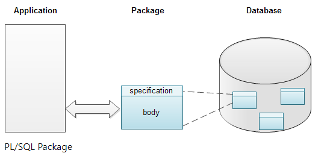
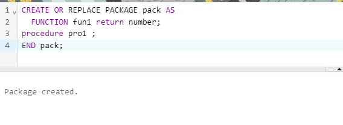

A package is a database object that groups logically related PL/SQL objects, such as procedures, functions, variables, cursors, and type declarations into a single unit. There is considerable performance improvement because of this encapsulation. The entire package is loaded into the memory when a procedure or a function, within the package, is called for
the first time. This reduces the unnecessary disk I/O and network traffic.
1.PACKAGE SPECIFICATION:-
The package specification is required when you create a new package. The package specification lists all the objects which are publicly accessible from other applications. It declares the types, variables, constants, exceptions, cursors, and subprograms (procedure or function). The scope of these declarations is local to your database schema and global to the package. So, the declared objects are accessible from your application and from anywhere in the package.

Creating PL/SQL Package Specification:-
To create a package or package specification, use the CREATE PACKAGE stater which you can execute interactively from SQL*Plus.
Syntax:-
CREATE [OR REPLACE] PACKAGE package_name [IS | AS]
procedure specification;
function_specification;
variable_declaration;
type_definition;
exception declaration;
cursor declaration;
END [package_name];
Example:-
CREATE OR REPLACE PACKAGE pack AS
FUNCTION fun1 return number;
procedure pro1 ;
END pack;
output:-

2.PACKAGE BODY:-
A package body contains the code that implements the package specification. It fully defines cursors, procedures and functions declared in the package specification. Unlike a package specification, the declarative part of a package body can contain subprogram bodies.
Creating PL/SQL Package body:-
To create a package body, use the CREATE PACKAGE BODY statement, which you can execute interactively from SQL*Plus. Syntax of CREATE PACKAGE BODY statement is as follows:
Syntax:-
CREATE [OR REPLACE] PACKAGE package_name [IS | AS]
procedure defination;
function_defination;
variable_declaration;
type_definition;
[BEGIN
executable statements;]
exception declaration;
cursor declaration;
END [package_name];
Example:-
CREATE OR REPLACE PACKAGE body pack AS
FUNCTION fun1 return number IS
begin
RETURN 1;
END;
procedure pro1 IS
begin
DBMS_OUTPUT.PUT_LINE('PROCEDURE');
end;
end pack;
output:-

DROPPING A PACKAGE:-
To drop a packages ,DROP PACKAGES statement is used .In order to drop a packages,one must either own the packages or have DROP ANY PACKAGES system privilege.
syntax:-
DROP PACKAGES packages_name;
Example:-
DROP packages pack;